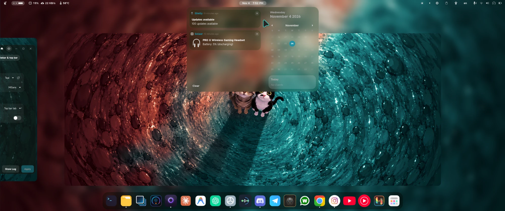
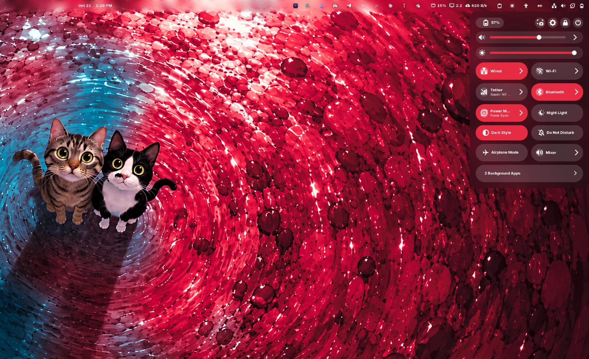

Aura Glass
A free frosted-glass theme for GNOME Shell 48–51, with real blur and a macOS-style look. One install script.

Install Aura Glass in three commands.
Type your distro: Arch, CachyOS, EndeavourOS, Fedora, Debian, Ubuntu or openSUSE.
Ubuntu: the settings app's packages, then the theme
sudo apt install git curl python3-gi python3-gi-cairo gir1.2-adw-1 git clone https://github.com/DevWebeloper/aura-glass.git cd aura-glass ./install.sh
Debian and Ubuntu have dependency mappings and the installer runs there; Arch is the tested path. Log out and back in when it finishes.
Glass all the way through the desktop.
Blur behind everything
The top bar, overview, menus, Quick Settings, notifications, dialogs and app windows all blur what is behind them, through a pinned and patched Blur My Shell.

One look in every app
The shell, GTK4 and libadwaita apps and GTK3 apps share one shape language and your GNOME accent colour. The blur's corners always match the corner painted on top.

A settings app for all of it
Retune glass, tints, blur, animations, accent, fonts, icons, pointer, corner rounding and per-app blur without re-running the installer.

Fast when it has to be
Performance mode keeps the look with no blur shaders. Adaptive Auto drops blur by itself on battery, under heavy GPU load or while a fullscreen game is focused.

Comes back out cleanly
Everything lands in your home folder, apart from two opt-in steps: system packages and the login screen. ./uninstall.sh puts it all back.
First, clone it and run the script.
Three commands, no root for the theme itself. The script checks your GNOME version first.
Then answer six questions.
Accent colour, which windows blur, window opacity, icons, pointer and font, extensions, and whether to theme the login screen.
Log out and back in.
GNOME loads extensions at login. The settings app opens itself the first time.
Retune it any time.
Open Aura Glass from the app grid, or run
aura-glass-settings.
Questions people ask.
What is Aura Glass?
A free, MIT-licensed GNOME theme that turns GNOME Shell 48–51 into a frosted-glass desktop. It themes the shell, GTK4/libadwaita apps and GTK3 apps, adds real blur through a pinned and patched Blur My Shell, and comes with a settings app to retune it.
How do I make GNOME look like macOS?
Install Aura Glass. Its theme is built on GNOME-macOS-Tahoe, with frosted blur, macOS-style traffic-light window buttons, and matching icon and pointer packs and fonts (Inter, MiSans or SF Pro), all chosen in the setup wizard.
How do I get blur in GNOME Shell?
Aura Glass installs Blur My Shell and tunes it so the top bar, overview, dock, menus, Quick Settings, notifications, dialogs and app windows all blur what is behind them, with corners that match the theme. You can also blur a single app from its window menu with “Blur This App”.
Which GNOME versions and distros does it support?
GNOME Shell 48, 49, 50 and 51, on Wayland. Arch, CachyOS and EndeavourOS are the tested path. Fedora, Debian, Ubuntu and openSUSE have dependency mappings and the installer runs there.
Does the blur drain the battery?
Blur costs GPU time mainly while something behind it keeps redrawing. Performance mode keeps the look without any blur shaders, and Adaptive performance → Auto drops blur by itself on battery, under heavy GPU load or while a fullscreen game is focused.
Is it safe to try, and how do I remove it?
Everything installs under your home folder except two opt-in steps (system packages and the GDM login screen). ./uninstall.sh takes it back out.